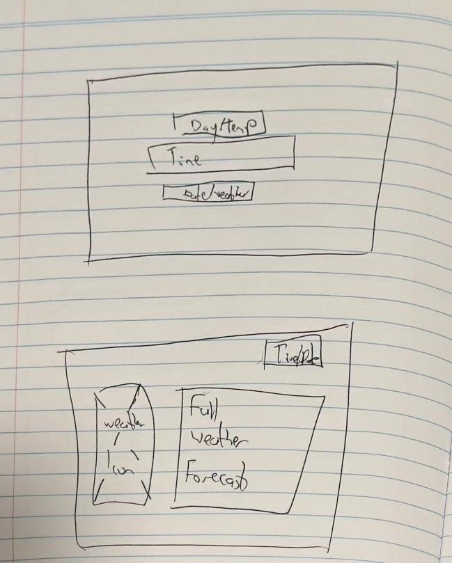
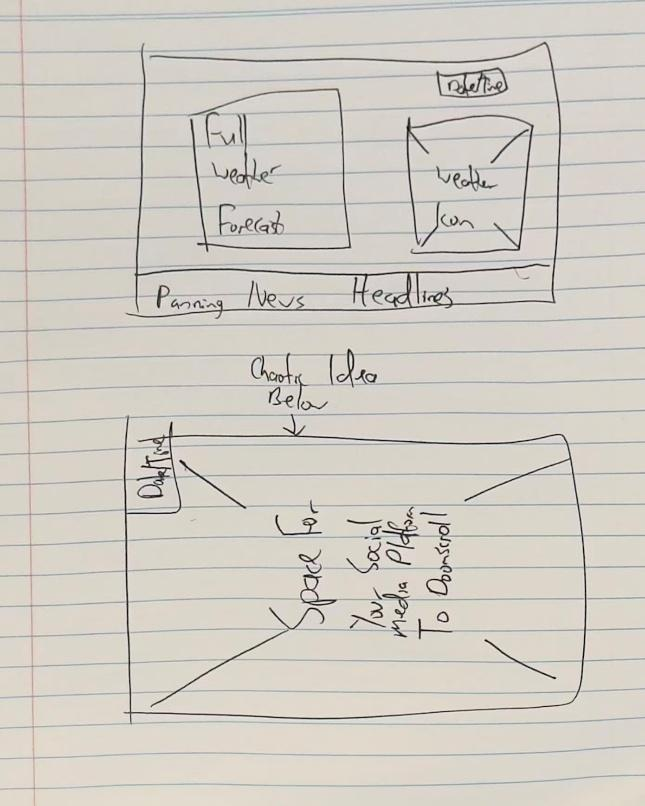
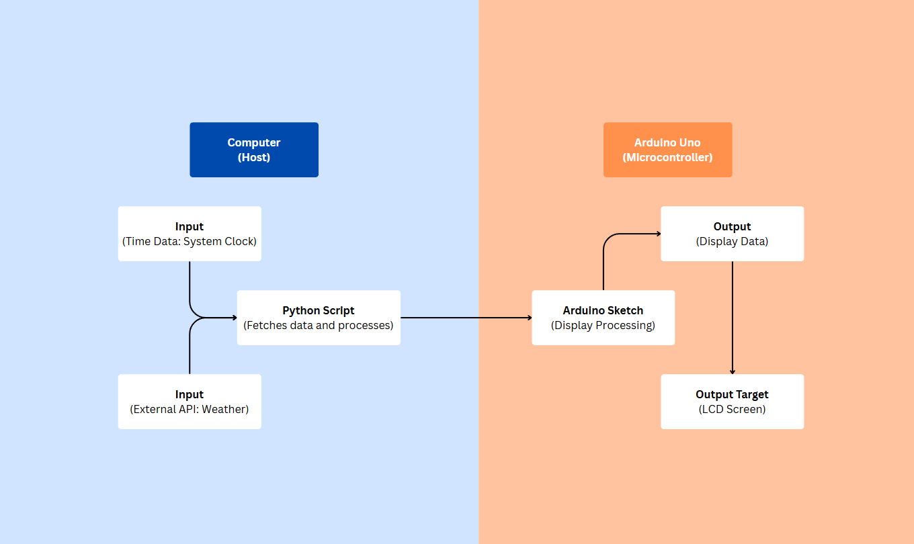

Project 03 — Computing Tech Assessment 2
Arduino Information Display
An Arduino Uno with an LCD screen that shows the time, day, date and live Sydney weather, fed by a Python script running on my computer.

How it works
A Python script on the computer reads the system clock and fetches the current weather from the Open-Meteo API every 10 minutes. Once a second it sends one line over USB serial to the Arduino: the time, plus two side lines that flip every 5 seconds between the day and date and the temperature and conditions.
The Arduino sketch splits that line at its two commas and redraws the screen only when the message changes — the time large and bold in the centre, the other two lines above and below, inside a 2px frame.
Everything is drawn in a single colour I called “Cloud”, a light sky blue (#87CEFA).
Part 1 — Design
Wireframes
Hand-drawn layouts for the screen, from a simple day / time / weather stack to fuller weather forecast and news-headline ideas.


Block Diagram
The computer (host) combines the system clock and the weather API in a Python script, then sends the result to the Arduino Uno, which processes it and outputs it to the LCD screen.

Part 2 — Build
import serial
import time
import requests
from datetime import datetime
PORT = "COM10"
BAUD_RATE = 9600
WEATHER_URL = "https://api.open-meteo.com/v1/forecast?latitude=-33.87&longitude=151.21¤t=temperature_2m,weather_code,wind_speed_10m"
WINDY_KMH = 25
# weather_code number turned into short words that fit the screen
CONDITIONS = {
0: "Clear", 1: "Mostly Clear", 2: "Partly Cloudy", 3: "Overcast",
45: "Fog", 48: "Fog",
51: "Drizzle", 53: "Drizzle", 55: "Drizzle",
61: "Light Rain", 63: "Rain", 65: "Heavy Rain",
66: "Freezing Rain", 67: "Freezing Rain",
71: "Light Snow", 73: "Snow", 75: "Heavy Snow", 77: "Snow",
80: "Showers", 81: "Showers", 82: "Heavy Showers",
85: "Snow Showers", 86: "Snow Showers",
95: "Storm", 96: "Storm", 99: "Storm",
}
# open the port, or say why it failed instead of dying quietly
try:
arduino = serial.Serial(PORT, BAUD_RATE)
except serial.SerialException as error:
print("Could not open", PORT)
print(error)
print("Fix: check Tools > Port, and close the Serial Monitor if it is open.")
raise SystemExit
time.sleep(2)
print("Connected. Press Ctrl+C to stop.")
temperature = "--"
weather_code = None
wind_speed = 0
seconds_until_weather = 0
while True:
# refresh the weather every 10 minutes, keep the last value if it fails
if seconds_until_weather <= 0:
try:
response = requests.get(WEATHER_URL, timeout=5)
current = response.json()["current"]
temperature = round(current["temperature_2m"])
weather_code = current["weather_code"]
wind_speed = current["wind_speed_10m"]
print("Weather updated:", temperature, weather_code, wind_speed)
except Exception as error:
print("Weather fetch failed, keeping last values:", error)
seconds_until_weather = 600
now = datetime.now()
# flip the side lines between date and weather every 5 seconds
show_weather = (int(time.time()) // 5) % 2 == 1
if show_weather:
conditions = CONDITIONS.get(weather_code, "...")
# wind only wins on an otherwise clear or cloudy day
if wind_speed >= WINDY_KMH and weather_code in (0, 1, 2, 3):
conditions = "Windy"
top_line = str(temperature) + " C"
bottom_line = conditions
else:
top_line = now.strftime("%A")
bottom_line = now.strftime("%d %b %Y")
time_text = now.strftime("%H:%M")
# three fields, comma separated, sent as bytes with a newline
message = time_text + "," + top_line + "," + bottom_line
arduino.write((message + "\n").encode())
print("Sent:", message)
time.sleep(1)
seconds_until_weather = seconds_until_weather - 1#include <Adafruit_GFX.h>
#include <MCUFRIEND_kbv.h>
#include <Fonts/FreeSans9pt7b.h>
#include <Fonts/FreeSansBold9pt7b.h>
MCUFRIEND_kbv tft;
#define BLACK 0x0000 // colours are 16-bit codes
#define CLOUD 0x867e
String lastMessage = "";
void setup() {
// start serial and the screen, show a holding message
Serial.begin(9600);
uint16_t id = tft.readID();
if (id == 0xD3D3) id = 0x9481;
tft.begin(id);
tft.setRotation(1);
tft.fillScreen(BLACK);
drawBorder();
showmsgXY(60, 130, 1, &FreeSans9pt7b, "Waiting for PC...");
}
void loop() {
// grab a whole line from the PC, but only redraw when it changes
if (Serial.available() > 0) {
String message = Serial.readStringUntil('\n');
message.trim();
if (message != lastMessage) {
lastMessage = message;
Serial.println(message);
showClock(message);
}
}
}
void showClock(String message) {
// find the two commas, then split the line into three parts
int comma1 = message.indexOf(',');
int comma2 = message.indexOf(',', comma1 + 1);
if (comma1 > -1 && comma2 > -1) {
String timeText = message.substring(0, comma1);
String dayText = message.substring(comma1 + 1, comma2);
String dateText = message.substring(comma2 + 1);
// wipe, redraw the frame, then the three lines
tft.fillScreen(BLACK);
drawBorder();
showmsgXY(135, 45, 1, &FreeSans9pt7b, dayText);
showmsgXY(105, 130, 3, &FreeSansBold9pt7b, timeText);
showmsgXY(120, 195, 1, &FreeSans9pt7b, dateText);
}
}
void drawBorder() {
// 2px frame set 6px in from every edge, so text never touches it
int pad = 6;
tft.drawRect(pad, pad, tft.width() - pad * 2, tft.height() - pad * 2, CLOUD);
tft.drawRect(pad + 1, pad + 1, tft.width() - pad * 2 - 2, tft.height() - pad * 2 - 2, CLOUD);
}
void showmsgXY(int x, int y, int sz, const GFXfont *f, String msg) {
// place the cursor and print one string in the chosen size and font
tft.setFont(f);
tft.setCursor(x, y);
tft.setTextColor(CLOUD);
tft.setTextSize(sz);
tft.print(msg);
}Part 3 — Reflection
The Arduino Information Display task was a task that had many challenges; from Exit Status 1 error codes to code straight up failing to work, it really made the task more interesting to do.
What Went Well
By the end of the task, I had a working Arduino and LCD screen and a working Python script and weather API. The location of the text was in a great place and my colour scheme, which I called “Cloud”, used a lovely colour: Light Sky Blue (#87CEFA).
What Was Difficult
Coding. Coding was definitely difficult. I used the default template a lot and had to start over many times. Running the code was easy. Hand coding it simply isn't my cup of tea.
What I Learnt
I learnt quite a bit about C++ and Python. Even though there was a healthy amount of vibe-coding involved, I still learnt about the pains of being a developer, including testing pixel by pixel where the centre of something is, which ultimately taught me to respect developers. I also learnt a bit more about APIs and Python, although I had already learnt most about them from tinkering with my computer at home and definitely messing up a few settings permanently.
At the end of the day, I didn't enjoy the task as much as I thought I would. I don't enjoy coding as much as I originally anticipated (especially C++) and definitely did not expect to troubleshoot so many times. However, I still enjoyed and appreciated my final product, which ended up working really well. If I were to do something differently, I would spend a bit more time on the UI instead of being so barebones (a bit like HTML without the CSS). I did enjoy running the Python script and I learnt to appreciate the wonders of Python a lot more.